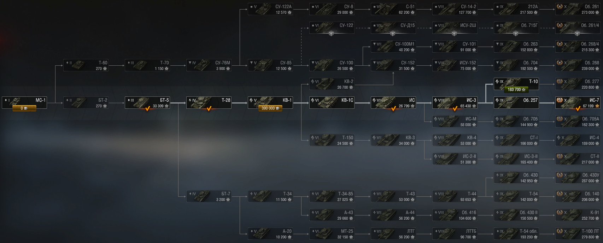

Игра Мир танков это разработка про танки, схожоя с игрой World of Tanks, но только от Русской компании Lesta Games. Концепция игры Мира танков это командные сражения игроков между собой на танках.
В этой игре большое разнообразие техники. В ней представлено более 700 единиц военной техники 11 наций. Но первых танков было выпущено всего две страны-55 танков, одна это техника СССР 27 танков. Вот как сейчас она выглядит.Советская техника самая простая в использовании,она лучше всего подойдет для новичка.
А вторая техника Германии 28 танков. Вот нынешний состав страны. Техника немцев самая бронированая в игре
В мире танков для выйгрыша катки, нужно подбирать тип снарядов, выцеливать слабые места техники соперника и уметь занимать нужные и полезные позиции для танка. Чтобы открывать новые танки нужен специальный опыт и золото, которое дается за игру на танке, в выйгранной игре дается намного больше этих ресурсов чем в проигранной. В игре присутствует очень реалестичная физика, танки с большой массой едут намного медленее чем с меньшим весом.